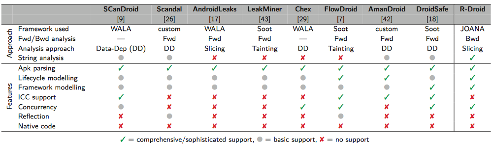

Renaissance is initially inspired by a list of anroid program understanding tools.
- DroidSafe: Android Static Analysis Tool The detailed description of DroidSafe could be found in research work Information-Flow Analysis of Android Applications in DroidSafe

The Renaissance tool include several components.
- renaissance-infoflow: The renaissance-infoflow explores the program and extract the information flow from Android programs;
- renaissance-pointsto: The renaissance-pointsto is a points-to analysis toolkit for Android applications;
- renaissance-slicing: The renaissance-slicing is a program slicing tool for Android applications.